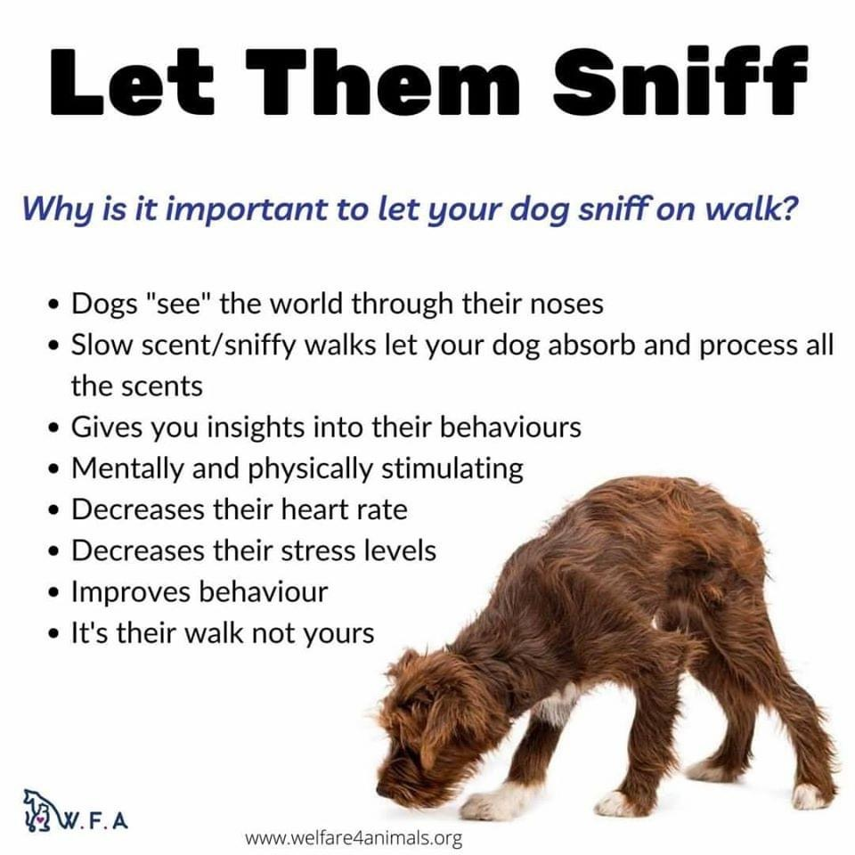

Blogs
Blog#1
Let your dog smell the world
Published-12-03-2010
It’s a big world out there, full of amazing smells. At least that is what your dog would tell you if they could...
Read MoreBlog#2
A tale of the two cocker
Published-12-03-2010

Spaniels were first mentioned in the 14th century by Gaston III, Count of Foix in his work the Livre de Chasse. The "cocking" or "cocker spaniel" was a type of field or land spaniel in the 19th century.
Read MoreBlog#3
Person of the year BABY YODA
Published-12-03-2010

He is a toddler member of the same unnamed alien species as the Star Wars characters Yoda and Yaddle, with whom he shares a strong ability in the Force.
Read MorePublished-12-03-2010
Blog#4
Lady and the frog
Published-12-03-2010

The frog said, 'I do not want your pearls, and jewels, and fine clothes; but if you will love me, and let me live with you and eat from off your golden plate, and sleep on your bed, I will bring you your ball again.'
Read MoreBlog#5
Colombia Bandeja paisa
Published-12-03-2010

is probably the most popular Colombian dish, originally from the Andean region of the country where the people are called “Paisas” and the area where I was born and raised.
Read More